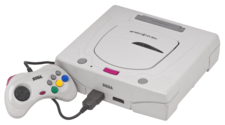
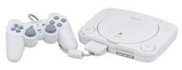

| Name
|
3DO Interactive Multiplayer
|
Atari Jaguar
|
Sega Saturn
|
PlayStation
|
Nintendo 64
|
| Developer
|
The 3DO Company
|
Atari
|
Sega
|
Sony
|
Nintendo
|
| Console
|
|
|

|

|
|
| Launch price (USD)
|
US$699.99 (equivalent to $1,214 in 2018)
|
US$249.99 (equivalent to $434 in 2018)
|
US$399.99 (equivalent to $658 in 2018)
|
US$299.99 (equivalent to $493 in 2018)[22]
|
US$199.99 (equivalent to $319 in 2018)
|
| Release date
|
- NA: October 4, 1993
- JP: March 20, 1994
- EU: September 4, 1994
|
- NA: November 23, 1993
- EU: June 27, 1994
- JP: November 21, 1994
|
- JP: November 22, 1994
- NA: May 11, 1995
- EU: July 8, 1995
|
- JP: December 3, 1994
- NA: September 9, 1995
- EU: September 29, 1995
- AU: November 15, 1995
|
- JP: June 23, 1996
- NA: September 29, 1996
- EU: March 1, 1997
- AU: March 1, 1997
|
| Media
|
CD-ROM
|
- Cartridge
- CD-ROM (via Jaguar CD add-on)
|
- CD-ROM
- Cartridge (limited, Japan and Europe only)
|
CD-ROM
|
- Cartridge
- Proprietary magnetic disk (via 64DD)
|
| Best-selling game
|
Gex, over 1 million
|
Alien vs Predator, more than 50.000
|
Virtua Fighter 2, 1.7 million in Japan
|
Gran Turismo, 10.85 million shipped (as of April 30, 2008)
|
Super Mario 64, 11.62 million (as of May 21, 2003)
|
| CPU
|
ARM60 (32‑bit RISC) @ 12.5 MHz (8.75 MIPS)
|
- "Tom" (32‑bit RISC) @ 26.59 MHz (34.635416684 MIPS)
- "Jerry" (32‑bit RISC) @ 26.59 MHz (34.635416684 MIPS)
- Motorola 68000 (16/32‑bit CISC) @ 13.3 MHz (2.3275 MIPS)
|
- 2× Hitachi SH-2 7604 (32‑bit RISC) @ 28.63 MHz (35 MIPS each) (70 MIPS added up)
- Hitachi SH-1 (32‑bit RISC) @ 20 MHz (12.5 MIPS)
- Motorola 68EC000 (16/32‑bit CISC) @ 11.3 MHz (1.9775 MIPS)
- SCU (32‑bit Saturn Control Unit)
|
- LSI LR333x0 (labelled as the Sony CXD8530CQ on the package) (based on the MIPS R3051 core) @ 33.8688 MHz (29.6352 MIPS)
- System Control Coprocessor (Inside CPU)
|
NEC VR4300 (64‑bit RISC) @ 93.75 MHz (125 MIPS)
|
| GPU
|
- 2× accelerated video co-processors
- Math co-processor (Inside CPU)
|
- Tom chip: GPU, Object Processor, Blitter
- Jerry chip: DSP
|
- Sega VDP1 (32‑bit Video Display Processor) @ 28.63 MHz (sprites, textures, polygons)
- Sega VDP2 (32‑bit Video Display Processor) @ 28.63 MHz (backgrounds, scrolling)
- SCU DSP (Inside SCU (32‑bit Saturn Control Unit)
|
- Sony GPU
- Vector math unit (in main CPU) @ 66 MIPS
|
Reality Co-Processor (64‑bit MIPS R4000 based, 128‑bit vector register processor) @ 62.5 MHz
|
| Sound chip(s)
|
13 channel unnamed custom 20‑bit DSP embedded in the CLIO chip
|
"Jerry" chip: DSP, 2× DAC (converts digital data to analog signals)
|
- Yamaha YMF292 SCSP
- Yamaha FH1 DSP (Inside Yamaha YMF292 SCSP 24‑bit, 128-step, 4 parallel instructions)
|
Sony SPU (Sound Processing Unit)
|
Reality Signal Processor (DSP)
|
| Memory
|
3 MB RAM
|
2 MB FPM DRAM (4× 512 KB chips)
|
4.5 MB RAM
- 2 MB SDRAM
- 1.5 MB VRAM (512 KB sprite/texture cache, 512 KB frame buffers, 512 KB backgrounds)
- 1 MB DRAM (512 KB sound, 512 KB CD-ROM sub-system buffer data cache)
|
3587 KB RAM
- 2 MB DRAM
- 1026 KB VRAM (1 MB frame buffer, 2 KB texture cache, 64 bytes FIFO buffer)
- 512 KB sound RAM
- 1 KB non-associative SRAM data cache
|
4 MB RDRAM (8 MB with Expansion Pak)
|
| Video
|
- Resolution: 320×240 to 384×288 (progressive), 320×480 to 768×576 (interlaced)
- Colors: 110,592 (384×288) on screen, out of 16,777,216 (24‑bit) palette
- Polygons: 20,000/sec, flat shading, Gouraud shading
- Sprites/textures: Scaling, rotation, texture mapping
- Background: 1 bitmap plane
|
- Resolution: 320×220 to 360×220 (progressive), 320×440 to 720×440 (interlaced)
- Colors: 79,200 (360×220) on screen, out of 16,777,216 (24‑bit) palette
- Polygons: 10,000/sec, flat shading, Gouraud shading support
- Sprites/textures: 1,000/frame (blitter objects), scaling, rotation, texture mapping
- Background: 1 bitmap plane
|
- Resolution: 320×224 to 720×240 (progressive), 320×448 to 720×576 (interlaced)
- Colors: 172,800 (720×240) on screen, out of 16,777,216 (24‑bit) palette
- Polygons: 90,000/sec (textured, lighting, Gouraud shading) to 500,000/sec (flat shading)
- Sprites/textures: 16,384/frame (32 bytes each, 512 KB memory), scaling, rotation, distortion, texture mapping
- Backgrounds: 7 (3–6 tilemap planes, 1–4 bitmap planes), parallax scrolling, scaling, rotation
|
- Resolution: 256×224 to 640×240 (progressive), 256×448 to 640×480 (interlaced)
- Colors: 153,600 (640×240) on screen, out of 16,777,216 (24‑bit) palette
- Polygons: 90,000/sec (textured, lighting, Gouraud shading) to 360,000/sec (flat shading)
- Sprites/textures: 4,000/frame (bitmap objects), scaling, rotation, texture mapping
- Background: 1 bitmap plane
|
- Resolution: 320×240 to 720×288 (progressive), 320×480 to 720×576 (interlaced)
- Colors: 207,360 (720×288) on screen, out of 16,777,216 (24‑bit) palette
- Polygons: 150,000/sec (textured, lighting, Gouraud shading) to 600,000/sec (flat shading), anti‑aliasing, Z-buffering
- Sprites/textures: Scaling, rotation, texture mapping, mipmapping, texture filtering, bilinear filtering, trilinear filtering
- Background: 1 bitmap plane
|
| Audio
|
Stereo audio, with:
- 16‑bit sound
- Dolby surround sound
- Streaming CD-DA audio (16‑bit PCM, 44.1 kHz sampling rate)
|
Stereo audio, with:
- Number of channels dependent on software
- Synthesis (wavetable synthesis, FM synthesis, FM sample synthesis, AM synthesis)
- 16‑bit PCM sampling
|
Stereo audio, with:
- 32 sound channels on SCSP
- FM synthesis on all 32 SCSP channels
- 16‑bit PCM audio with 44.1 kHz sampling rate on all 32 SCSP channels
- 1 streaming CD-DA channel (16‑bit PCM, 44.1 kHz)
|
Stereo audio, with:
- 24 ADPCM channels on SPU
- 16‑bit audio and 44.1 kHz sampling rate on all 24 ADPCM channels
- 1 streaming CD-DA channel (16‑bit PCM, 44.1 kHz)
|
Stereo audio, with:
- Variable number of channels (up to 100 if all system resources are devoted to audio)
- Capable of playing back different types of audio (including PCM, MP3, MIDI and tracker music)
- 16‑bit audio and 44.1 kHz sampling rate on all channels
|
| Accessories (retail)
|
- MPEG cards
- FZ-EM256 save memory backup unit
- Gamegun
- Mouse
|
- Jaguar TeamTap
- Jaguar Pro Controller
- Jaguar MemoryTrack Cartridge
- Jaguar JagLink Interface
|
- Arcade Stick
- Saturn digital gamepad
- 3D controller
- Light guns
- Multitap (up to 12 players)
- Keyboard
- Sega NetLink (online modem and keyboard)
- Mouse
- 1.44 MB 3.5" floppy disk drive
- DirectLink (LAN)
- Memory card
- MPEG cards
- RAM expansion cartridges
|
- PlayStation Multitap (up to 8 players)
- Fishing reel controllers (Bass Landing and Reel Fishing)
- Dual Analog Controller
- DualShock
- GunCon
- Jogcon
- Konami Justifier
- NeGcon
- PocketStation (Japan only)
- PlayStation Mouse
- Analog Joystick
- Dance pad
- LCD screen (for PSone systems only)
- Memory card
- Link Cable
|
- Controller Pak
- Memory Expansion Pak
- Rumble Pak
- Fishing Reel
- Transfer Pak
- Nintendo 64DD (Japan only)
- Microphone
- TiltPak
|
| Online services
|
None
|
Jaguar Voice/Data Communicator 19.2k modem (no mass production) (1995–present)
|
- NetLink 28.8k modem in North America (1996–present)
- SegaNet and 14.4k Modem in Japan (1996–2000)
|
None
|
- Unofficial SharkWire Online 14.4k modem in the U.S. (1999–2003)
- Randnet in Japan (for 64DD only) (1999–2001)
|